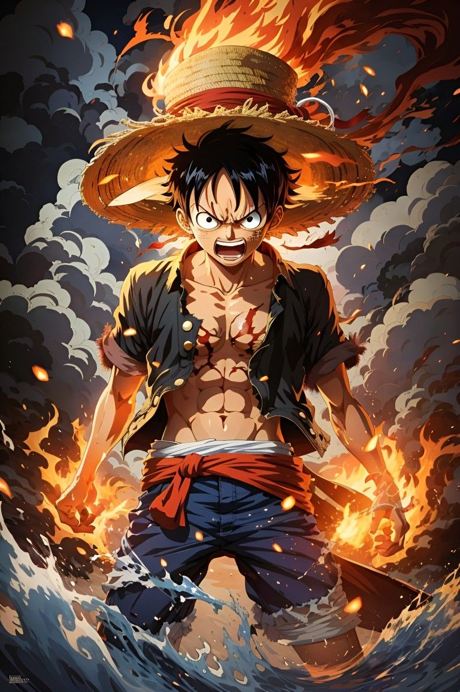
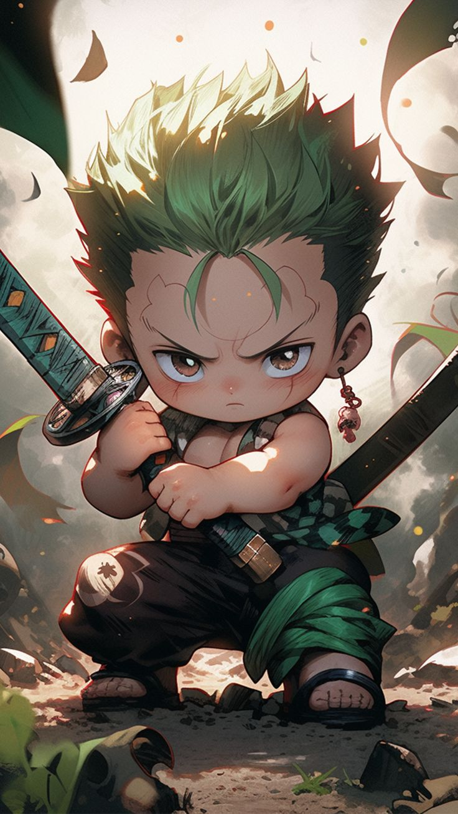
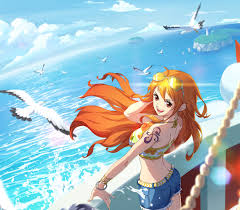
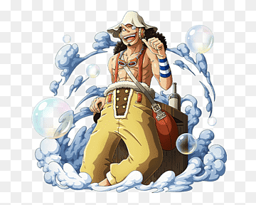
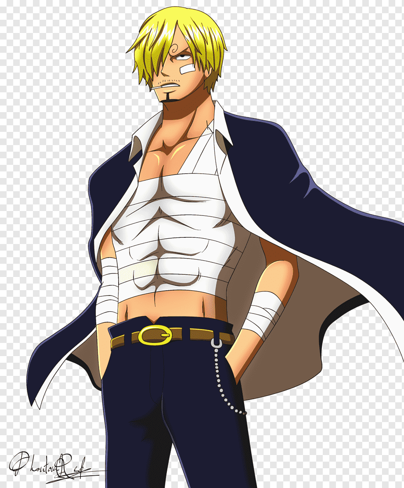
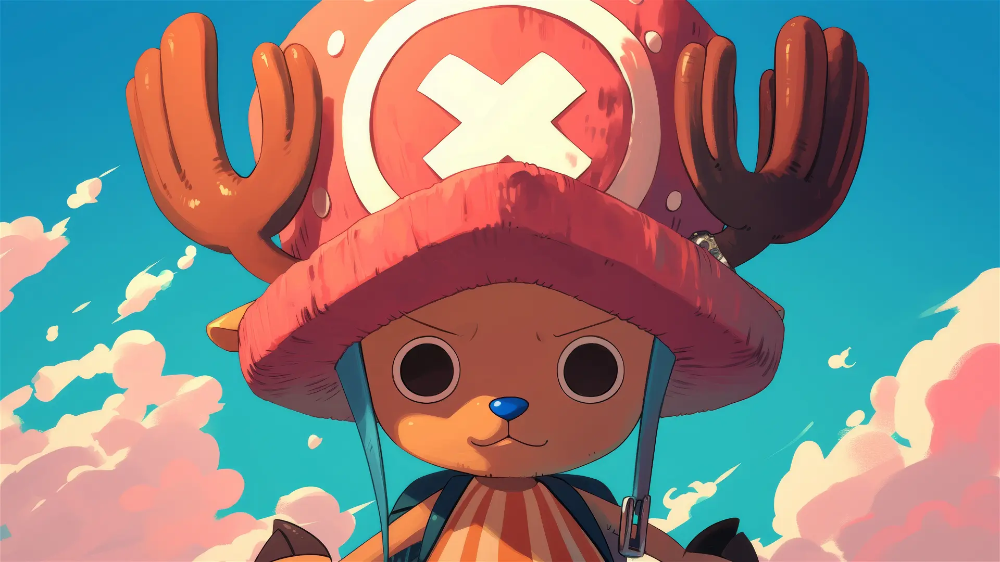
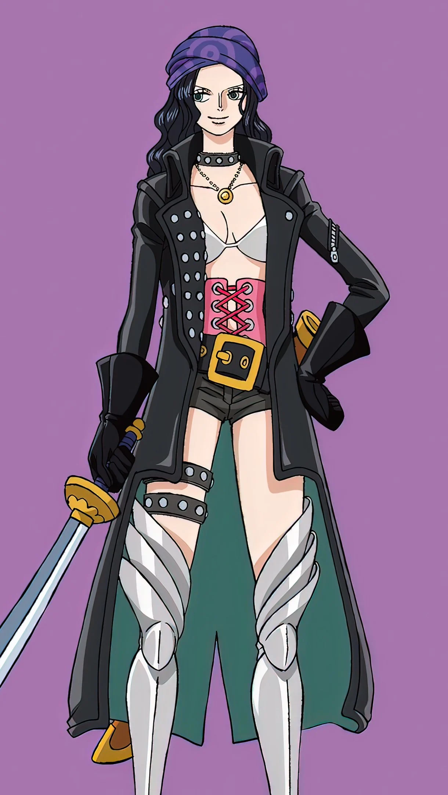
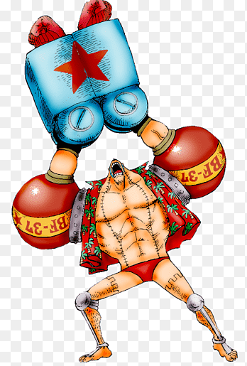
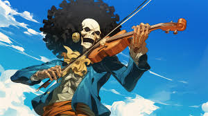
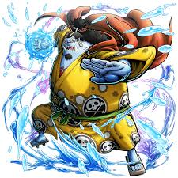

INICIO
¡Bienvenido al mundo de *One Piece*! Únete a Monkey D. Luffy y su tripulación en su búsqueda del legendario tesoro, el One Piece, para convertirse en el Rey de los Piratas.
¡Bienvenido al mundo de *One Piece*! Únete a Monkey D. Luffy y su tripulación en su búsqueda del legendario tesoro, el One Piece, para convertirse en el Rey de los Piratas.
*One Piece* sigue las aventuras de Monkey D. Luffy, un joven pirata con la habilidad de estirar su cuerpo como goma gracias a la Fruta del Diablo Gomu Gomu. Con el sueño de encontrar el One Piece y ser el Rey de los Piratas, Luffy reúne una tripulación diversa y valiente. En su viaje, enfrentan peligros, combaten poderosos enemigos, y descubren los secretos del mundo mientras navegan por los mares más traicioneros.
Luffy es el capitán de los Piratas del Sombrero de Paja. Es un joven con espíritu inquebrantable y sueños gigantes. Ha comido la Fruta Gomu Gomu, permitiéndole estirar su cuerpo como goma.
Zoro es el primer compañero de Luffy y un maestro espadachín. Maneja tres espadas simultáneamente y sueña con ser el mejor espadachín del mundo.
Nami es la navegante de la tripulación. Experta en cartografía, su sueño es dibujar un mapa completo del mundo. Es conocida por su astucia y habilidades para el robo.
Usopp es un tirador habilidoso con un gran talento para inventar historias. Aunque inicialmente era un cobarde, se convierte en un valiente guerrero.
Sanji es el cocinero de la tripulación. Sueña con encontrar el All Blue, un lugar legendario donde convergen los mares. Además, es experto en combate cuerpo a cuerpo.
Chopper es un reno que ha comido la Fruta Hito Hito, dándole habilidades humanas. Es el médico de la tripulación y puede transformarse en diferentes formas.
Robin es una arqueóloga experta que busca descubrir la historia perdida del mundo. Tiene el poder de reproducir partes de su cuerpo gracias a la Fruta Hana Hana.
Franky es un cyborg y carpintero que construyó el barco Thousand Sunny. Es un genio de la ingeniería y un luchador poderoso.
Brook es un esqueleto viviente y músico de la tripulación. Gracias a la Fruta Yomi Yomi, puede revivir una vez después de morir.
Jinbe es un hombre-pez experto en karate. Fue miembro de los Siete Guerreros del Mar y ahora es parte de la tripulación de Luffy.
Contacto
+591 12345678
Correo
correo@gmail.com
Dirección
AV. Siempre Viva